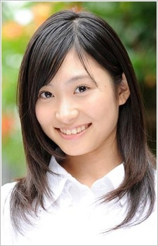
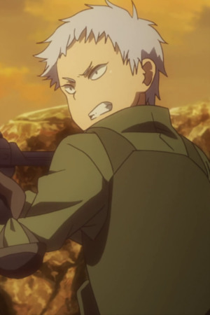

Haruka Shiraishi is a Japanese actress and voice actress. She is affiliated with Hirata Office.
- Gender: Female
- Birthday: April 8, 1995
- Birthplace: Tokyo, Japan

|

|
|---|
| |
Haruka Shiraishi is a Japanese actress and voice actress. She is affiliated with Hirata Office.
|
 |
|---|
|  | Tanya | Sword Art Online Alternative: Gun Gale Online | Tanya is a player in Gun Gale Online. Her real name is Risa Kusunoki. She and her friends are part of their school gymnastic team. |